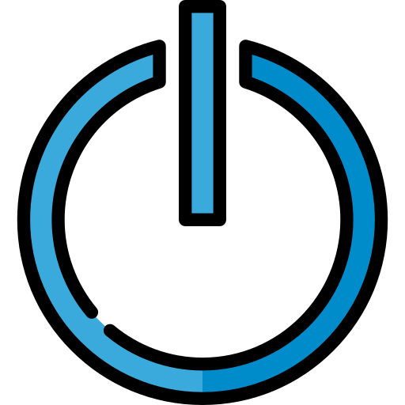
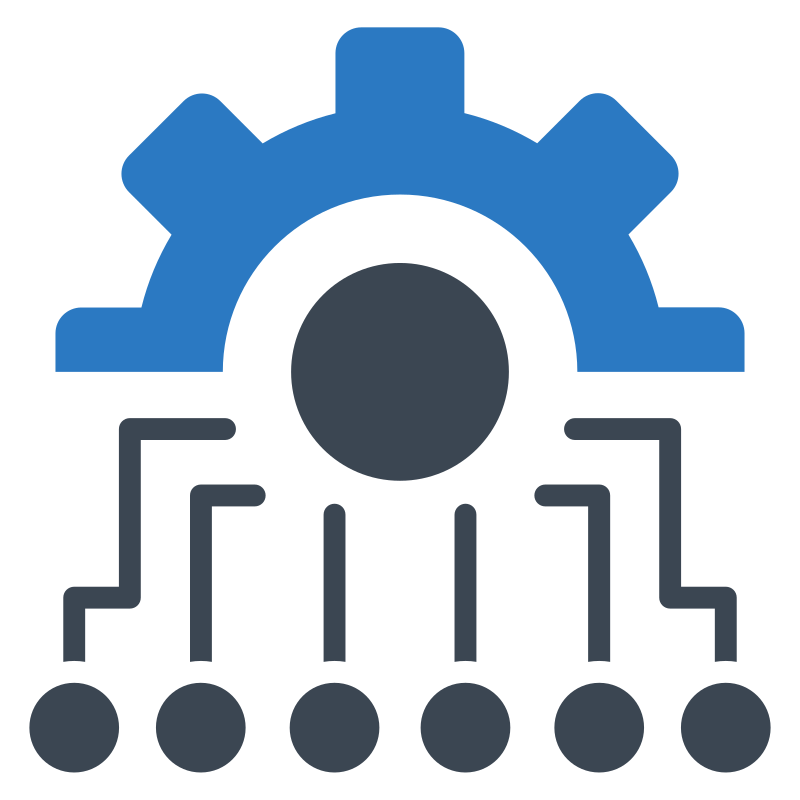
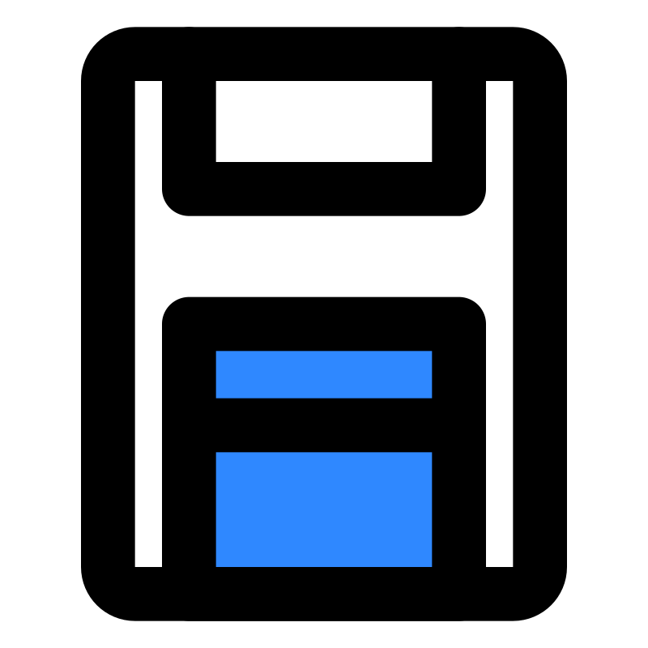

Let's get it working
Choose a Problem
Select the problem that best matches what you are experiencing.

PC Won't Turn OnCheck power and startup issues.Screen ProblemsFix display and monitor issues.
Software ProblemsFix apps that aren't working.Battery Not ChargingCheck the charger, battery, and power settings.Bluetooth Not WorkingFix Bluetooth connections and pairing.USB Device Not RecognizedCheck USB ports, cables, and devices.Printer Not PrintingCheck printer status, connection, and queue.Webcam Not WorkingCheck the camera shutter, permissions, and apps.Microphone Not WorkingCheck input devices, mute controls, and access.
Storage Almost FullFree up space without deleting important files.Blue Screen or Unexpected RestartRecord error codes and try safe recovery steps.